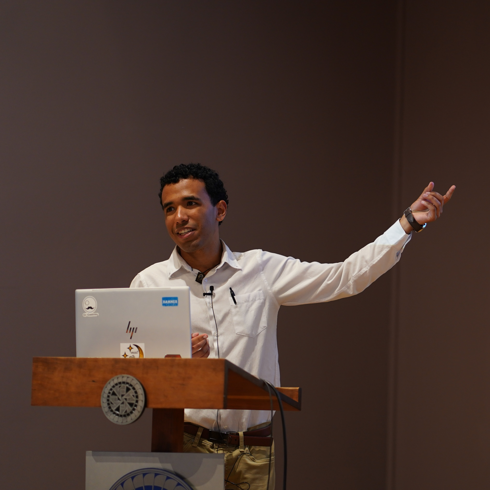

I'm Leonardo, and I'm a fourth year Applied Mathematics major at Illinois Tech in Chicago. My hometown is Chitré, Panama.
My interests can be roughly divided into two. From a theoretical perspective, I'm interested in the mechanisms of cooperation, including how beliefs, traits, and environment set the conditions for it, a question that I've started approaching through game theory. Separately, from an applied perspective, I'm interested in building systems that take human factors seriously, such as food pantry operations.
I'm involved with mathematical Olympiads. I'm a former contestant for the Panama IMO team, and I teach contest math to students in the Panamanian training program.
As a fun fact, my Erdős number is 3.